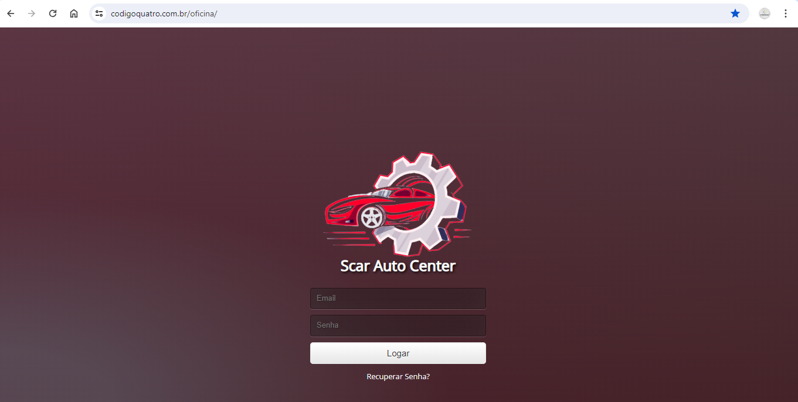

Gestão de Oficinas
Aplicação web para realizar o controle de emissão de ordens de serviço e controle de estoque.
Olá! Meu nome é Alves Costa e sou um desenvolvedor freelance apaixonado por transformar ideias em soluções digitais inovadoras. Com anos de experiência no desenvolvimento web e uma habilidade especial em transformar requisitos complexos em interfaces simples e intuitivas, estou pronto para colaborar no seu próximo projeto.
Formado em Analise e Desenvolvimento de Sistemas para Web e com um extenso portfólio de projetos bem-sucedidos, estou familiarizado com uma ampla gama de tecnologias e linguagens de programação, incluindo HTML, CSS, JavaScript, PHP e frameworks Bootstrap.
Ao longo da minha carreira, tenho trabalhado com uma variedade de clientes em diferentes setores, desde pequenas empresas locais até empresas de pequeno porte. Meu foco principal é entender as necessidades únicas de cada cliente e entregar soluções personalizadas e de alta qualidade que superem suas expectativas.
Além de desenvolvimento web, também tenho experiência em design responsivo, otimização de desempenho, integração de APIs, e-commerce e muito mais. Estou sempre aprendendo e me mantendo atualizado com as últimas tendências e tecnologias do setor para garantir que meus clientes recebam o melhor serviço possível.
Aplicação web para realizar o controle de emissão de ordens de serviço e controle de estoque.
Aplicação realiza controle de pedidos de um Delivery para lanchonetes.
Você pode me contatar através do alvescosta@gmail.com